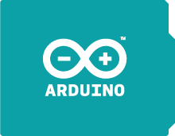
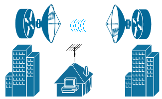

EXPERIENCIA
- Freelance dictado de clases en algebra, fisica, trigonometría.2007-2010
- Freelance, proyectos para CORCYTEC 2010
- Dictado de clases de css compiler a estudiantes de la carrera profesional ing electrónica - UNSAAC.2011
- Asumí el liderazgo de rama estudiantil IEEE-Unsaac en el cargo de presidenta de la rama.2012
- Colabore en la ejecución del 4th IEEE Latin American Symposium on Circuits and Systems (LASCAS) and Iberchip Workshop. 2013
- Practicas Pre Profesionales, en el área de Networking realizado en ISCE durante 4 meses2014-2015
- Trabajo de 1 año en el área de Networking, seguridad con video vigilancia en ISCE.2015-2016
- Trabajo en Silver Linning Co.2017-Actualmente
PREMIACIONES
- Participante y ganador en el evento IV Feria Científica de Innovación y transferencia Tecnológica 2011 del CORCYTEC Cusco.
- Segundo lugar en el V Concurso de Robótica e Innovación Tecnológica en el 2013 en la categoría Soccer MiroSot, organizado por la carrera profesional de ing. Electronica de la Universidad Nacional San Antonio Abad del Cusco.
- Destacada como mejor estudiante en Laboratoria
IDIOMAS
- Español
- Ingles
- Quechua
HABILIDADES


- 
- 